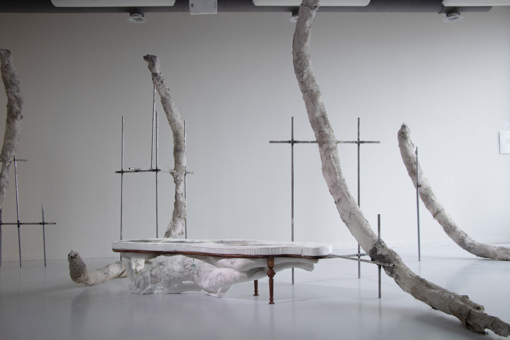
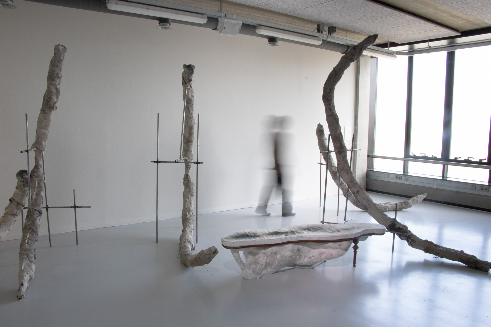
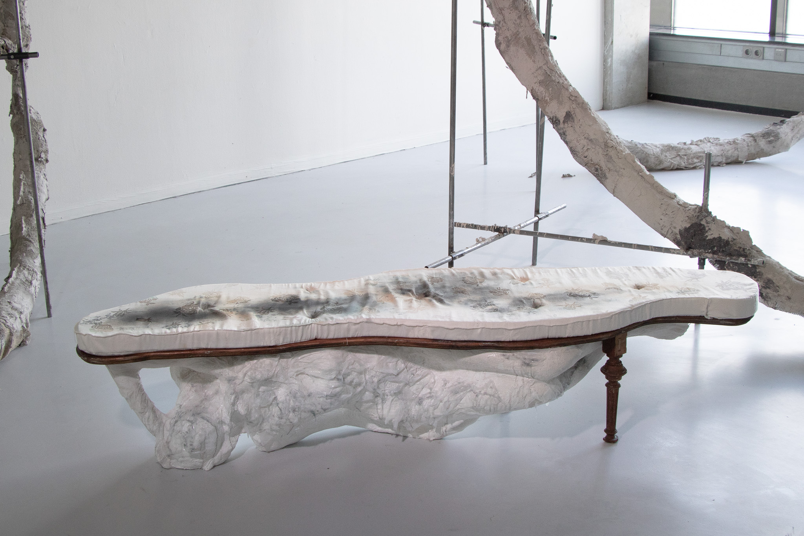

2026
mixed media installation and performance by Emily Read and Jomel

White Eclipse is a mixed media sculptural installation centering the reclining figure as a recurring motif. Drawing on the art-historical term Odalisque, often used to describe reclining nude female figures, the work responds to the exploitation of women in art by repositioning gender-based violence as planetary and generational in scale. From the Odalisque to the sleeping Buddha, the work acknowledges the reclining figure as simultaneously embodying liminalities of action and inaction, life and death, beauty and violence. The skeletal rib structure of a reclining body is deconstructed and enlarged to the architectural size of the room, transforming anatomy into a spatial experience and blurring the boundary between body and structure.


Images of the performance to be uploaded very soon.